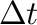
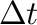
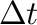

In the right hand top corner is a textual display of the current simulation time , and the current (adaptive) difference between iterations . This information is specific to a Minsky simulation model.
 , and the current (adaptive) difference between iterations
. This information is specific to a Minsky simulation
model.
, and the current (adaptive) difference between iterations
. This information is specific to a Minsky simulation
model.